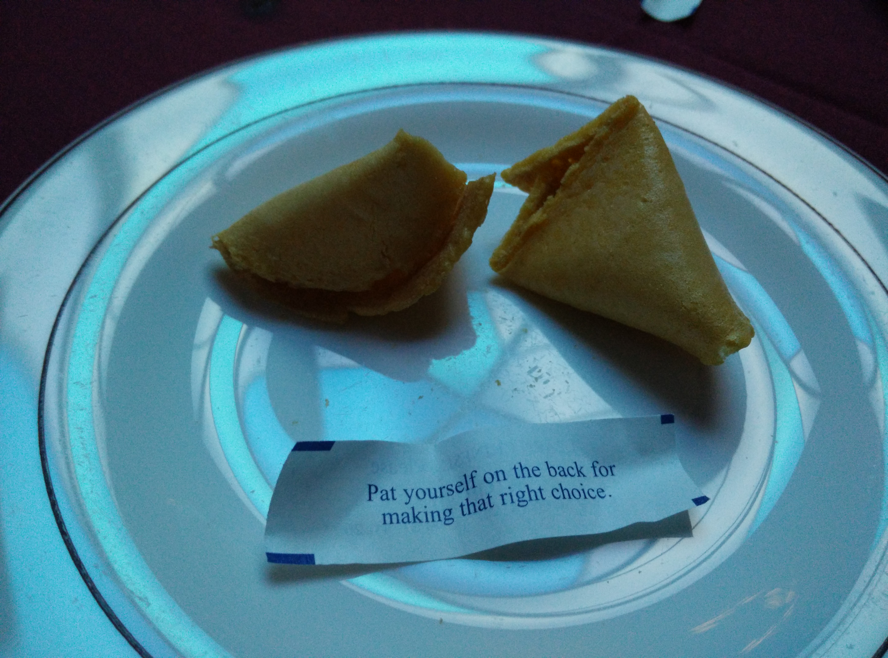

Day 2 at Metis
While Day 1 was more of an introduction and orientation day, Day 2 at Metis quickly started off. We dove straight into our first major project named Benson (yes, named after Olivia Benson from Law an Order).
The project is basically an exploration into some of the major tools we'll be using throughout this bootcamp. We got right into ipython notebook and started by scraping publicly available data from the MTA. We are basically taking this data and then manipulating it in a way so that we can easily analyze it and come to certain conclusions. I am particularly interested about this data because I commute about 3hrs every day on the subway and it's definitely not the most 'fun' experience...

While many of the concepts we go over are fundamentally not that difficult, what gets difficult is the frustration that comes from debugging! As I've learned over the past few years, most of the time spent coding is on debugging minor errors or bugs, and it's no different here.
But no matter how difficult it gets, I will work hard because I chose to be here and hopefully I made the right choice as I was reminded of today after dinner.
